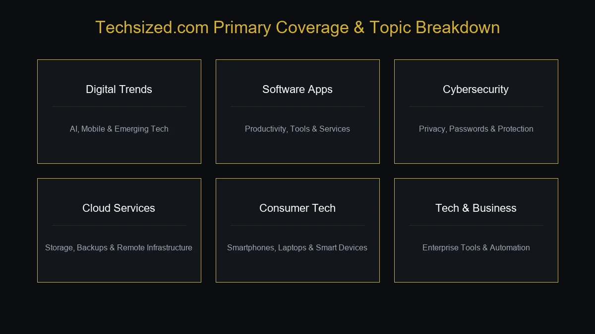

If you have searched for Techsized com, you are probably trying to understand what the website is, what type of information it provides, and whether it is worth exploring.
The name suggests a technology-focused website, and the site's current content supports that general impression. Techsized publishes articles across technology and related digital subjects, while also touching areas such as business, health, finance, and other practical topics.
What makes Techsized interesting is its attempt to make technology understandable without requiring readers to have an advanced technical background. Instead of focusing only on highly specialized subjects, its content can be useful for people who want to understand software, digital tools, emerging technology, gadgets, and technology trends in a more accessible way.
This guide takes a closer look at Techsized com, including what it is, the types of content readers can find, who may benefit from it, how to evaluate the information, and what to consider before relying on any online technology resource.
What Is Techsized Com?
Techsized com is a technology-oriented online content website that publishes informational articles about technology, digital tools, emerging trends, and related subjects.
The website's content is not limited to one narrow technology category. Instead, it covers different areas of the digital world and also publishes articles outside pure technology.
This broader approach makes Techsized useful for readers who want to explore several connected areas without visiting a highly specialized technical publication.
Technology can be difficult to understand when information is written entirely for developers, engineers, or industry professionals. A general technology publication can provide a useful starting point by explaining concepts in simpler language.
That is where Techsized fits into the wider technology-content ecosystem.
Why Are People Searching for Techsized Com?
The keyword Techsized com is a branded or domain-style search query.
People searching for it may have very different intentions.
They may want to:
- Find the Techsized website
- Understand what Techsized is
- Read technology-related articles
- Find software information
- Learn about gadgets and digital tools
- Explore technology trends
- Read technology tutorials
- Check whether Techsized is useful
- Determine whether the website is trustworthy
- Find out what subjects Techsized covers
This means an article targeting Techsized com should not simply repeat the brand name.
It should answer the questions a real visitor is likely to have.
What Topics Does Techsized Com Cover?
Technology is a broad subject, and Techsized follows that wider approach.
The site's content can be understood through several major topic areas.

Technology and Digital Trends
Technology trends are constantly changing.
Articles in this area can help readers understand developments involving:
- Artificial intelligence
- Software
- Mobile technology
- Digital platforms
- Automation
- Cloud computing
- Cybersecurity
- Emerging technologies
The value of trend-focused content depends heavily on how current it is.
A technology article should always be considered in relation to its publication date because products, services, and industry practices can change quickly.
Software and Applications
Software is an important part of everyday digital life.
People use applications for:
- Communication
- Work
- Education
- Finance
- Design
- Productivity
- Entertainment
- Business management
Technology websites can help users understand what different applications do, how they compare, and what type of user they may be suitable for.
However, readers should verify important information such as pricing, compatibility, system requirements, privacy policies, and current features through the software provider's official website.
Artificial Intelligence
Artificial intelligence has become one of the biggest areas of technology coverage.
AI now affects areas such as:
- Search
- Content creation
- Customer service
- Data analysis
- Software development
- Marketing
- Education
- Automation
- Business operations
For beginners, AI terminology can quickly become confusing.
Terms such as machine learning, generative AI, large language models, computer vision, and automation describe different concepts.
Technology content can help introduce these ideas, but readers should distinguish between educational explanations and promotional claims.
Cybersecurity
Cybersecurity is another important technology subject.
Every internet user has some level of exposure to security risks, whether they are using:
- Online banking
- Social media
- Cloud services
- Mobile applications
- Business software
- Connected devices
Useful cybersecurity education can include topics such as:
- Strong passwords
- Multi-factor authentication
- Phishing awareness
- Software updates
- Privacy
- Data protection
- Malware awareness
- Safe browsing
Security advice should always be checked against current guidance because threats and recommended practices evolve.
Cloud Computing
Cloud computing has changed how individuals and organizations store data and use software.
Instead of depending entirely on local computers and physical infrastructure, cloud services can provide:
- Remote storage
- Online applications
- Computing resources
- Backup systems
- Collaboration tools
- Scalable business infrastructure
Cloud technology is now connected to many other technology areas, including AI, cybersecurity, software development, and enterprise systems.
For beginners, understanding the basic difference between local computing and cloud-based services can provide a strong foundation for learning more advanced concepts.
Consumer Technology and Gadgets
Technology readers are also interested in devices they use every day.
Consumer technology can include:
- Smartphones
- Laptops
- Tablets
- Smartwatches
- Wireless accessories
- Smart-home devices
- Gaming hardware
- Networking equipment
When researching a device, readers should look beyond marketing specifications.
Important factors can include:
- Performance
- Battery life
- Compatibility
- Software support
- Build quality
- Security updates
- Warranty
- Price
- Long-term value
A product that looks impressive on paper is not necessarily the best choice for every user.
Business and Technology
Technology and business are increasingly connected.
Businesses use technology for:
- Communication
- Accounting
- Customer management
- Marketing
- Data analysis
- Automation
- Remote work
- Cybersecurity
- E-commerce
This means technology content is no longer relevant only to technical professionals.
Business owners and employees also need enough digital knowledge to understand the tools they use.
Techsized's broader content approach can be useful for readers interested in this intersection between technology and business.
Finance and Digital Technology
Modern finance is closely connected to technology.
Digital financial services can include:
- Mobile banking
- Online payments
- Digital wallets
- Financial applications
- Online investment platforms
- Automated financial tools
Technology has made financial services more convenient, but it has also created new security and privacy concerns.
Readers should therefore be careful when evaluating any financial product or service discussed online.
General technology information should not be treated as personalized financial advice.
Health Technology
Technology is also transforming healthcare.
Examples include:
- Telemedicine
- Health applications
- Wearable devices
- Electronic health records
- AI-assisted analysis
- Remote monitoring
- Digital appointment systems
Health technology can improve access and convenience, but users should understand the difference between a consumer wellness product and a clinically validated medical tool.
For health-related decisions, professional medical advice remains important.
Is Techsized Com a Technology Blog?
Yes, Techsized can generally be understood as a technology-focused online publication or tech blog, although its broader content may extend into related categories.
The site is particularly relevant to people interested in accessible technology information rather than highly specialized academic or engineering research.
That distinction matters.
A developer researching advanced programming architecture may need technical documentation or specialist developer publications.
A general reader trying to understand a new technology trend may prefer a simpler explanation.
Techsized is more naturally suited to the second type of reader.
Is Techsized Com Suitable for Beginners?
One of the strongest potential advantages of a general technology publication is accessibility.
Beginners do not necessarily need highly technical explanations.
Someone new to technology may want to understand:
- What a tool does
- Why a technology matters
- How a product works at a basic level
- What a technology trend means
- Which digital concepts are worth learning
A useful beginner-friendly article should explain terminology before using it extensively.
For example, someone unfamiliar with cloud computing should first understand the basic concept before moving into infrastructure architecture.
The same principle applies to AI, cybersecurity, blockchain, automation, and other technical subjects.
What Are the Main Benefits of Techsized Com?
Several characteristics can make a technology-focused content website useful.
1. Broad Technology Coverage
Readers can explore multiple areas instead of focusing on one narrow niche.
2. Beginner-Friendly Information
General explanations can make unfamiliar technology easier to understand.
3. Practical Learning
Technology becomes more valuable when readers can apply what they learn.
4. Awareness of Emerging Trends
Following technology developments can help readers understand how digital products and services are changing.
5. Cross-Industry Information
Technology increasingly affects business, finance, education, health, and everyday life.
6. Convenient Research
Having related technology topics in one place can reduce the need to begin every search from scratch.
Techsized Com for Technology Enthusiasts
Experienced technology readers may approach the site differently from beginners.
Instead of simply asking “What is this?”, they may want to understand:
- Why the technology matters
- How it compares with alternatives
- Where it is being adopted
- What limitations it has
- What could happen next
- How businesses are using it
For advanced readers, general articles are often most useful as starting points.
A deeper research process should then involve:
- Official documentation
- Technical publications
- Research papers
- Product documentation
- Industry reports
- Primary sources
This creates a stronger information chain than relying on one article.
How to Get the Most From Techsized Com
Simply reading technology articles is not always enough.
A better approach is to turn information into practical understanding.
Start With Fundamentals
If a topic is unfamiliar, begin with introductory material.
Learn One Topic at a Time
Technology is too broad to understand everything simultaneously.
Choose a subject such as AI, cybersecurity, cloud computing, or software and build knowledge gradually.
Compare Multiple Sources
Different publications may explain the same technology from different perspectives.
Check Current Information
Technology changes quickly.
Always check dates, product versions, pricing, and current policies.
Apply What You Learn
Hands-on experience is often more valuable than passive reading.
Try a tool, explore its documentation, or practice the concept where appropriate.
Is Techsized Com Reliable?
Reliability should be evaluated at the article level, not assumed simply because a website has a technology-related name.
When assessing a Techsized article, consider:
- Who wrote it?
- When was it published?
- Are claims supported?
- Are external sources provided?
- Is the information current?
- Does the article distinguish fact from opinion?
- Can important claims be confirmed elsewhere?
For everyday technology education, a general article can be a useful starting point.
For important decisions, especially involving money, privacy, cybersecurity, or business operations, readers should verify information through authoritative sources.
Is Techsized Com Safe to Browse?
There is no reason to assume that a website is unsafe simply because it is unfamiliar.
Nevertheless, normal online-safety practices are always appropriate.
When browsing Techsized or any unfamiliar website:
- Confirm the domain spelling.
- Check that the connection uses HTTPS.
- Avoid unnecessary personal information.
- Be cautious with unexpected downloads.
- Do not install unknown software simply because an article recommends it.
- Be careful with payment requests.
- Verify external websites before entering passwords.
HTTPS protects data transmitted between your browser and the website, but it does not guarantee that every claim on a website is accurate.
Techsized Com and Product Research
Technology websites can be useful when researching products, but readers should avoid relying on a single review.
Before buying a device or software product, compare:
- Price
- Specifications
- Features
- Compatibility
- Warranty
- Customer support
- Security
- Software updates
- User feedback
- Alternatives
A product recommendation should always be considered in the context of the user's specific needs.
For example, the best laptop for a student may be completely different from the best laptop for a professional video editor.
Techsized Com and Technology Trends
Technology trends often generate significant attention.
However, not every trend becomes an important long-term innovation.
A useful way to evaluate a trend is to ask:
Is There a Real Use Case?
A technology needs more than publicity to become useful.
Is It Being Adopted?
Look for evidence of actual adoption rather than only predictions.
Is It Improving?
Technologies that continue to become cheaper, faster, or more reliable may have stronger long-term potential.
Does It Solve a Real Problem?
The most valuable technologies usually address a meaningful user or business problem.
What Are the Limitations?
Every technology has trade-offs.
This approach helps readers avoid confusing temporary hype with sustainable innovation.
Techsized Com and Semantic SEO
For a branded search such as Techsized com, semantic SEO is particularly important.
The main entity should be supported naturally by related concepts.
Relevant concepts include:
- Technology blog
- Digital information
- Technology news
- Software
- Gadgets
- Artificial intelligence
- Cybersecurity
- Cloud computing
- Mobile technology
- Digital tools
- Technology trends
- Product information
- Tutorials
- Technology education
These concepts create a broader topical relationship around Techsized.
For example:
Techsized → technology blog → digital information → software → AI → cybersecurity → cloud computing → gadgets → technology trends
This provides much stronger topical context than repeatedly using the exact phrase Techsized com.
Entity Profile: Techsized Com
For a branded search, the core entity can be summarized clearly:
Entity: Techsized
Domain: Techsized.com
Type: Technology-focused online publication
Primary purpose: Publishing accessible information about technology and digital subjects
Main topic areas: Technology, software, gadgets, AI, cybersecurity, cloud computing, digital trends, and related subjects
Audience: Beginners, technology enthusiasts, professionals, students, and business users
The precise content mix can change over time as the website publishes new material.
Techsized Com vs. Other Technology Websites
There are thousands of technology websites online, but they do not all serve the same audience.
| Type of Website | Primary Purpose | Typical Audience |
|---|---|---|
| Techsized Com | General technology information | Beginners and general tech readers |
| Technical documentation | Detailed product or software instructions | Developers and professionals |
| Specialist tech publication | Deep industry reporting | Technology professionals |
| Consumer review site | Product comparisons and buying advice | Shoppers |
| Academic publication | Research and technical findings | Researchers and specialists |
This distinction helps explain where Techsized can be useful.
It does not need to replace every other technology source.
Instead, it can serve as one part of a broader research process.
Who Should Read Techsized Com?
Beginners
People who are starting to learn about technology may appreciate accessible explanations.
Students
Students can use technology content to build general digital knowledge.
Professionals
Professionals can follow technology developments that affect their industries.
Business Owners
Entrepreneurs can learn about software, digital tools, automation, and emerging technologies.
Technology Enthusiasts
Readers interested in gadgets, AI, software, and digital trends can explore a broad selection of topics.
What Are the Limitations of Techsized Com?
No general technology website can provide everything.
Limited Specialist Depth
Highly technical readers may need more specialized sources.
Information Can Become Outdated
Technology changes quickly, especially software, AI tools, pricing, and security practices.
Different Topics Require Different Expertise
An author knowledgeable about consumer technology may not necessarily be an expert in cybersecurity or finance.
Independent Verification Matters
Important claims should be confirmed through reliable sources.
Reviews Need Context
A product that works well for one user may not be suitable for another.
Common Mistakes When Using Techsized Com
Mistake 1: Treating One Article as the Final Authority
A single article should rarely be the only source for an important technology decision.
Mistake 2: Ignoring Publication Dates
Old technology information can quickly become inaccurate.
Mistake 3: Following Every New Trend
Not every viral technology becomes useful long term.
Mistake 4: Confusing Marketing With Evidence
Promotional language is not the same as independent verification.
Mistake 5: Ignoring Security
Technology products can create privacy and cybersecurity risks.
Mistake 6: Choosing Products Based Only on Specifications
Real-world usability, support, compatibility, and long-term value matter too.
How to Verify Technology Information
When an article makes an important claim, use a simple verification process.
Check the Official Source
For product features or policies, the manufacturer's or provider's website should usually be your first reference.
Check the Date
Make sure the information is current.
Compare Multiple Sources
Look for independent confirmation.
Test Where Appropriate
For software or digital tools, hands-on testing can reveal practical differences.
Look for Primary Evidence
Technical documentation, research papers, official announcements, and product specifications are stronger evidence than unsupported claims.
Techsized Com and the Future of Technology Content
Technology publishing is changing alongside technology itself.
Readers increasingly expect:
- Faster updates
- Clearer explanations
- Better comparisons
- More practical guides
- Reliable sources
- AI-assisted research
- Interactive content
- Personalized recommendations
At the same time, AI-generated information creates a new challenge.
A technology publication must provide more than generic explanations.
Useful technology content should offer:
- Original insight
- Accurate information
- Clear context
- Practical examples
- Current details
- Meaningful comparisons
As the technology industry evolves, these qualities will become increasingly important.
Why Practical Technology Knowledge Matters
Technology literacy is no longer only useful for IT professionals.
People encounter digital systems every day through:
- Smartphones
- Online banking
- Digital payments
- Cloud storage
- Social networks
- Online shopping
- AI assistants
- Workplace software
- Connected devices
Understanding basic technology can help people make better decisions.
For example, knowing how multi-factor authentication works can improve account security.
Understanding cloud storage can make file management easier.
Knowing how AI systems work at a basic level can help users evaluate their capabilities and limitations.
This is why accessible technology education remains valuable.
Frequently Asked Questions About Techsized Com
What is Techsized com?
Techsized com is a technology-focused online content website covering technology, digital tools, software, gadgets, emerging trends, and related subjects.
Is Techsized com a technology blog?
Yes. It can generally be understood as a technology-oriented blog or digital publication, although its content may also cover related business, health, finance, and lifestyle subjects.
Who is Techsized com for?
The website can be useful for beginners, students, technology enthusiasts, professionals, entrepreneurs, and general readers interested in digital topics.
Is Techsized com suitable for beginners?
Yes. General technology content can provide an accessible starting point for people who are unfamiliar with technical concepts.
What topics does Techsized com cover?
Topics can include technology trends, software, gadgets, artificial intelligence, cybersecurity, cloud computing, digital tools, consumer technology, and related subjects.
Does Techsized com cover artificial intelligence?
AI is an important part of modern technology coverage and is among the subjects relevant to the site's broader technology focus.
Does Techsized com cover cybersecurity?
Cybersecurity is a major technology topic and can be relevant to readers interested in digital safety, privacy, passwords, malware, and online security.
Can Techsized com help with technology research?
Yes, it can serve as a starting point for general technology research. Important claims should still be verified through official documentation and other reliable sources.
Is Techsized com reliable?
Reliability should be evaluated on an article-by-article basis. Check authorship, publication dates, sources, evidence, and currentness before relying on important information.
Is Techsized com safe?
Users should follow normal web-safety practices, including verifying the domain, avoiding unexpected downloads, protecting passwords, and being cautious about sharing personal information.
Can Techsized com be used for product research?
It can be one source of product information, but buyers should compare specifications, prices, warranties, independent reviews, and official product information before purchasing.
Why should I compare technology information from multiple websites?
Technology changes quickly, and different sources may provide different perspectives. Comparing sources helps identify outdated, incomplete, or unsupported information.
Is Techsized com useful for professionals?
Professionals can use technology content to stay aware of emerging tools and trends, although specialist technical decisions may require more authoritative professional resources.
Final Thoughts
Techsized com is best understood as a technology-focused online publication that helps readers explore digital topics, technology trends, software, gadgets, AI, cybersecurity, cloud computing, and other areas of the modern technology landscape.
Its biggest potential advantage is accessibility. Technology can become unnecessarily complicated when every explanation assumes specialist knowledge. A general technology website can provide a useful starting point for readers who want to understand what a technology does, why it matters, and how it may affect everyday life or business.
At the same time, readers should understand the limits of general technology content.
A beginner guide is not the same thing as technical documentation. A product article is not necessarily an independent laboratory test. And a general technology article should not automatically be treated as authoritative advice on cybersecurity, finance, privacy, or business operations.
The best way to use Techsized com is therefore as part of a broader information process: learn the basics, explore relevant topics, compare multiple sources, check publication dates, and verify important claims through official or primary sources.
Whether you are a student learning about AI, a professional following digital trends, a business owner exploring new software, or simply someone trying to understand the latest technology, Techsized can serve as a starting point for exploring the constantly changing digital world.
The real value of any technology publication ultimately comes down to the same things: accuracy, relevance, clarity, freshness, and usefulness. Those are the factors worth considering when deciding how much weight to give any particular article on Techsized com.
For more such useful information read our site ateliergolddruck.com